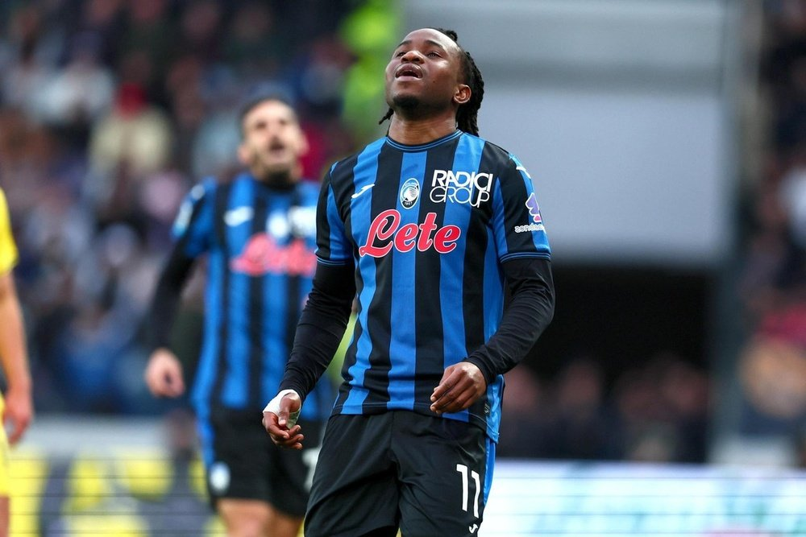
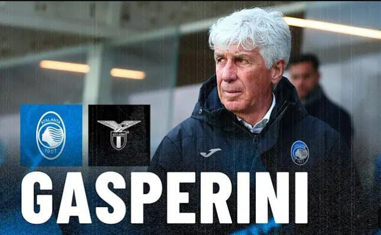

La Atalanta tuvo un malentendido en un cambio contra la Lazio. En vez de quitar a Ederson, el encargado de hacer la sustitución entendió que era Lookman.
La Atalanta sumó este domingo ante la Lazio (0-1) su tercera derrota consecutiva en un partido que dejó la curiosa imagen del cambio del nigeriano Ademola Lookman, sustituido por error debido a la confusión del cuerpo técnico con los motes del propio 'Ade' Lookman y el del brasileño Ederson, conocido como 'Ede'.
En el minuto 74 de partido, con todavía 16 más tiempo añadido por delante y un marcador tan ajustado, la afición de la Atalanta miró extrañada al banquillo cuando el cartelón del cuarto árbitro lució el número de Lookman como jugador que debía abandonar el campo.
En el banquillo de la 'Dea' también hubo movimientos extraños, pero finalmente el cambio se completó y no pudo deshacerse cuando Gian Piero Gasperini se dio cuenta del error.
El técnico de la Atalanta indicó a su cuerpo técnico que el cambio debía ser 'Ede', refiriéndose al centrocampista Ederson. Sin embargo, los receptores del mensaje entendieron 'Ade', diminutivo de Ademola y mote del nigeriano.
"Ederson debería haber salido, nos equivocamos, se ve que no era el día... Nosotros mismos cometimos un error y no intervenimos antes de que saliera Lookman", explicó Gasperini tras el partido en rueda de prensa.
"Confudimos 'Ede' con 'Ade'... ahí estaba el malentendido. Había dicho 'Ede', de Ederson, y se entendió 'Ade', de Ademola. Para cuando nos dimos cuenta Lookman ya estaba fuera del campo y no hubo oportunidad de evitarlo", añadió.
La Atalanta sumó la tercera derrota consecutiva y se alejó del segundo puesto. A falta de 7 jornadas, la 'Dea' es tercera con 58 puntos, aunque no tiene asegurada la plaza de Liga de Campeones porque la pelea se abrió de nuevo tras su derrota.
El octavo clasificado, la Fiorentina, tiene 52 puntos, solo 6 menos. Bologna, Juventus, Lazio y Roma están entre medias, todos con posibilidades de entrar en Champions en este tramo decisivo de temporada.
